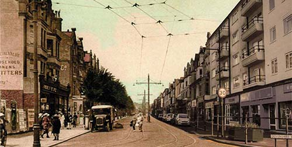

Bexhill is an ancient town home to a number of historic sites, Edwardian and Victorian architecture, and one of the first Art Deco buildings - the De La Warr Pavilion.
The name Bexhill was originally Bixlea from the 8th century, then followed by the Doomsday Book's Bexlei meaning 'glade where box trees grow'. It is thought that a misunderstanding in language during the 13th century turned the second syllable into 'hill'.[1]
Today Bexhill has a population of over 41,000. It prides itself on its long beaches and diverse countryside, independent traders and traditional culture. The economy set to expand with the new trunk roads and business parks being built to the north.
If you wish to view some historical maps of the area be sure to check out National Library of Scotland and old-maps.co.uk.

Devonshire Road old and new
© Robin Clarke